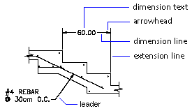
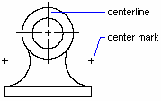

Autodesk AutoCAD 2021: ActiveX Developer's Guide > Dimensions, Leaders, and Geometric Tolerances > About Dimensioning Concepts (VBA/ActiveX) >
This topic briefly defines the parts of a dimension.

A dimension line is a line that indicates the direction and extent of a dimension. For an angular dimension, the dimension line is an arc. Extension lines, also called projection lines or witness lines, extend from the feature being dimensioned to the dimension line. Arrowheads, also called symbols of termination or just termination, are added to each end of the dimension line. Dimension text is a text string that usually indicates the actual measurement. The text may also include prefixes, suffixes, and tolerances. A leader is a solid line leading from some annotation to the referenced feature. A center mark is a small cross that marks the center of a circle or arc. Centerlines are broken lines that mark the center of a circle or arc.
